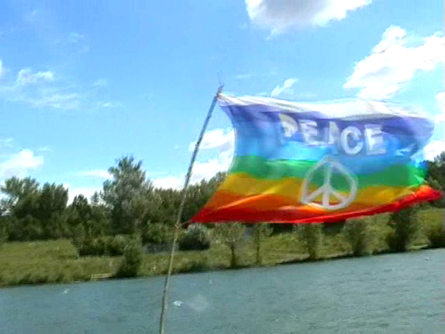

Ein etwas später Nachbericht meiner Reise im Juli.

Was als Schnapsidee entstand, haben wir diesen Sommer realisiert: Mit einem gebrauchten, motorlosen Schlauboot traten wir Anfang Juli eine vierwöchige Abenteuerfahrt die Donau hinunter an. Ausgerüstet mit Zelten, wasserdichten Säcken, einem ausführlichen Buch über die Donaubefahrung, einem billigen 40 Euro Beiboot und zwei Paddeln machten wir uns zu dritt von Wien aus auf einen gemütlichen Trip auf.
Erster Fehlschlag war der Start auf der neuen Donau, auf der Ostseite der Donauinsel. Was sich auf der Karte als verlockender, schleusenloser Kanal darstellte war in Wirklichkeit ein fast strömungsloser See mit vielen Sperren. Am Tag 1 legten wir also sage und schreibe 6 Kilometer zurück und mussten noch auf der Donauinsel campieren. In der Früh weckte uns die Polizei (Wildcampen ist ja nicht legal) und bat uns sehr freundlich und höflich die Zelte abzubauen, was wir sowieso vor hatten. Am Tag 2 kamen wir endlich in den Hauptstrom und von da an ging es etwas schneller vorwärts.
Wir waren uns im klaren, dass wir in den zur Verfügung stehenden 4 Wochen wohl kaum die fast 2000 Kilometer bis zum Schwarzen Meer schaffen würden, also schlugen wir ein gemächliches Tempo mit ca. 20 Kilometern pro Tag an. Die Fortbewegungsarbeit erledigte die Strömung, wir sonnten uns am Boot, spielten das Kartenspiel Magic oder lasen Bücher. Bei schönen Plätzen am Ufer stoppten wir, erkundeten die Umgebung und schlugen unsere Zelte über Nacht auf.
So führte uns die Donau über Hainburg in die Slowakei, Bratislava, die slowakisch-ungarische Grenze entlang, nach Budapest und quer durch Ungarn hindurch zu unserer Endstation in Baja. In Budapest und in Baja verbrachten wir einige Tage in Jugendherbergen und genossen echte Betten und Duschen. Auf der Fahrt wuschen wir uns und unsere Wäsche in der Donau, die außerhalb der Städte eine halbwegs aktzeptable Wasserqualität bot.
Die Verpflegung war auch kein Problem, entlang der Donau gibt bis auf wenige Ausnahmen immer Dörfer und kleine Städte, wo wir in Supermärkten oder bei Greislern Trinkwasser (10 Liter Kanister) und Essen kaufen konnten. Es gibt immer wieder auch sehr leckere Restaurants am Ufer, wo selbst ich als Vegetarierer immer auf meine Kosten kam.
Die Donau selbst erwies sich als harmloser Fluß, der völlig gefahrlos befahren werden kann. Wir waren mit unseren Schwimmwesten über-ausgerüstet, sie dienten ab Tag 2 nur mehr als Sitz- und Schlafpolster auf dem Rest der Reise. Auch der Schiffsverkehr war weder bedrohlich noch störend, der Fluß war immer breit genug zum Ausweichen, was mit ein paar Padelschlägen schnell erledigt war. Prognosen wie "Ihr werdet nicht lebend zurückkommen!" sind im Nachhinein gesehen einfach nur lächerlich.
Bemerkenswert war in Ungarn das massenhaft wild wachsende Marihuana, das sich vor allem in der Nähe von Sonnenblumenfeldern wie Unkraut ausbreitet. Allerdings war das Zeug stark versamt und noch nicht reif, wir haben es nicht getrocknet und nicht getestet, also können wir auch nicht sagen, dass es nur eine homöopathische Wirkung hatte. Alles in allem kann ich so eine Bootsreise uneingeschränkt weiterempfehlen, eignet sich gut zum Abschalten und Seele baumlen lassen. Mosquito-Spray nicht vergessen!
Comments
Klingt ja echt nach 'ner
Klingt ja echt nach 'ner tollen Reise! Da krieg ich ja auch Lust sowas zu machen ... Nun, erst mal Erasmus, dann schau ich weiter ;)
Skunk.
kannst ja die donau wieder
kannst ja die donau wieder raufpaddeln zu uns ;-) und ansonsten: ich bin auch immer für paddelreisen zu haben, kann auch menschen mit booten ausstatten und zelten und so (ca. 12 boote, 2er und 1er, 5 zelte oder so glaub ich) ;-) würd mich drauf freun!
loki
hallo. bin zufällig auf
hallo.
bin zufällig auf diesen post und deinen blog gestoßen, sind leider nicht viele, dafür aber ein paar gute einträge hier.
vor allem dieser hier fasziniert mich. hast du vielleicht noch mehr infos für uns oder gibts noch blogs von deinen "mitreisenden"? hast mir richtig lust aufs reisen gemacht, gibts irgendwelche gesetzlichen regelungen bzgl. bootfahren auf der donau?
danke für die infos, und danke für den post. kannst mich auch gern per mail kontaktieren.
mfg
michael
Es gibt da fast keine
In reply to hallo. bin zufällig auf by michael
Es gibt da fast keine rechtlichen Einschränkungen, wenn dein Boot einen mehr als 5 PS starken Motor hat, brauchst du halt den entsprechenden Führerschein. AFAIK haben wir uns auch so einen Befahrungserlaubnisschein aus Deutschland bestellt, den wir aber nie gebraucht haben. Muss dazu sagen, dass wir auch nie aus dem EU-Raum rausgekommen sind, ab Serbien wirds eventuell mühsamer (Visum etc.).
Sehr hilfreich war dieses Buch (ISBN: 3892255865, viele nützliche Infos wie Flußkarten, Sehenswürdigkeiten, Rechtliches, Sprache etc.)
Hey, find ich super dass ich
Hey,
find ich super dass ich deinen Eintrag hier finde. Hört sich nach der super Sache an. Genau auf diese Idee bin ich auch gekommenb und diesen sommer ist es soweit.
Sag mal, kannst du mir vielleicht mal sagen, wie es den aussieht mit Regelungen und Fahrverboten auf der Donau? Kann man da immer drauf, oder gibt es Strecken, die man nicht befahren darf? Hattet ihr irgendwo Probleme? Was meinst du den, was so die maximale Geschwindigkeit wäre am Tag, wenn man sich ins Zeug legt. Ich habe max 6 Wochen für die Strecke, und wollte eventuell auch in Wien starten. Meinst du das es machbar ist?
Ich freue mich voll auf deine Antwort, und bedanke mich shcon mal im vorraus.
Gruß
Alexandra
Es gibt kein Fahrverbot auf
In reply to Hey, find ich super dass ich by Alex
In 6 Wochen ohne Motor wird mit einem Schlauboot fast unmöglich sein bis ins Schwarze Meer zu kommen. Kanus sind schneller (da haben wir auch ein paar Leute getroffen), dann musst da aber auch ein ordentliches Tempo anschlagen, um das in 6 Wochen zu schaffen. Wir haben durch treiben lassen und sehr wenig paddeln ca. 20 Kilometer pro Tag gemacht (6-8 Stunden am Boot). Da geht also sicher mehr!
Hey, echt coole idee! genau
Hey,
echt coole idee! genau das selbe (nur nicht so weit) hab ich auch vor. ich würd mich freuen wenn du mir und den anderen interessiertn vllt noch ein paar tipps geben könntest. mich würd besonders interessieren wieviel Kilometer ihr schlussendlich ungefähr weitergebracht habt pro tag, wieviel stunden ihr so ca. pro tag unterwegs wart, wie ihr mit den schleusen getan habt usw... würd mich echt über eine antwort freuen!
lg
Siehe oben, ca. 20 Kilometer
In reply to Hey, echt coole idee! genau by Michi
Siehe oben, ca. 20 Kilometer pro Tag, ca. 6-8 Stunden am Boot pro Tag. Es gab auf unserem Weg nur eine Schleuse, die wir umgangen haben, in dem wir auf einen Seitenarm gewechselt sind (Boot und Zeug hinübertragen ist anstrengend). Wichtig sind halbwegs detaillierte Karten, ich kann wieder das obige Buch wärmstens empfehlen. Da sind z.B. auch Restaurants am Fluß eingezeichnet :-)
Befahrungserlaubnisschein
Was genau hat es sich mit der AFAIK auf sich?
Irgendwelche Erlaubnisse einholen bzw Schwimmwestenpflicht?
Frage deswegen weil ich auch ein gutes 7 Kammern (350kg Fassung) und ein weniger gutes 4 Kammern (280kg Fassung) Schlauchboot hab und mich so eine Tour interessiert bzw die Natur zu erleben und bissl Adventure zu erleben.
Ein Freund von mir hat diesen
In reply to Befahrungserlaubnisschein by Macus 19Jahre
Ein Freund von mir hat diesen Erlaubnisschein damals aus Deutschland bestellt, war nur eine Formalität. Schwimmwestenpflicht besteht keine außer in Schleusen, die wir aber nie genutzt haben.
Also brauch ich für die Donau
In reply to Ein Freund von mir hat diesen by klausi
Also brauch ich für die Donau definitiv keinen Erlaubnisschein? Ich druck einfach dieses ganze geschriebene aus falls was sein sollte. Aber wir sind ja nur mit Padeln unterwegs und nicht mit einem Motor.
Schwimmwestenpflicht gibts auch nicht.
Seit Ihr eigentlich durch eine Schleuse gefahren und kostet das was zB. in Wien die letzte Schleuse. Wenn ja wie war das?
MFG Marcus
Marcus
Ich kann dir leider definitiv
In reply to Also brauch ich für die Donau by Marcus
Ich kann dir leider definitiv nicht sagen, ob du einen Erlaubnisschein brauchst oder nicht (am besten selbst bei den Behörden nachfragen). Wir wurden jedenfalls nie kontrolliert.
Nein, wir sind nie durch eine Schleuse gefahren, deshalb keine Ahnung.
Durch die Schleusen !!
Wir machen das seit 3 Jahren jedes jahr im Sommer von Ingolstadt, je nach dem wie lange wir Zeit haben Regensburg. Dazwischen sind ungefähr 3 Schleusen. Die erste ist bei Voburg und ganz harmlos. Einer muss aussteigen den Schleusenhebel nach recht für runter- und links für hochfahren legen und dann auf dem Knopf bleiben. Ist auch ne Beschreibung drann, es kann wirklich jeder !!
Die Schleuse bei Bad Abbach ist etwas rasenter! Man kann sie aus dem Boot betätigen (ohne aussteigen). Es geht dann eine Klappenach untenund das Wasser fliest rasannt nach unten und man fährt mit dem Boot einfach mit der (rasanten) Strömung bergab. Sie etwas gefährlich aus ist es aber nicht wenn sie einzeln benutzt, was was auf jedenfall zu raten ist . Annsonsten kann es sein das am ende der Schleuse einem das zweite Boot hinten drauf fährt. Wir fahren auch immer mit dem Schlauchboot runter. Man sollte aber mindestens zu zweit im Boot sein das einer link und einer recht von der Wand ( am besten mit dem Paddel ) abstoßen kann, falls man zu nah an die Wand kommt . Die Schleuse ist nämlich nur ca 1,80 -2 Meter breit. Wenn einer diese Strecke fahren möcht sollte bedenken das nach Regensburg der Fluss immer breiter und die Strömung immer schlechter wird. So ab Donaustauf hat man das gefühl das man steht. Also man sollte in Regensburg raus. Wer dann immer noch weiter will sollte mit dem zug nach Deggendorf und da wieder zusteigen.
MfG fossi
Der Rest des Weges ...
Colle Sache hätte ich mal gesagt. Schade das ihr das Delta nicht gesehen habt. Ist fantastisch! Ich bin es letzten Sommer hinuntergerudert. Auch mit nem Schlauchboot. Aber wohl mit so einem wie ihr als Beiboot hattet. Ich bin in Galatie (Rumänien) aufgebrochen und die rund 300 Kilomter bis ans schwarze Meer gerudert. begleitet wurde ich zeitweise von einem deutschen Kajakfahrer der die ganze Donau mitgenommen hat. Wenn es dich interessiert, klick mal auf meinen Namen. Der führt dich zu einem reich bebilderten Bericht. (Geht grad online, kommt jeden Tag was neues, in 4 Wochen ist dann alles lesbar)
Grüsse Stefan
Fotos
Hallo! Toller Blog ;) Sag mal gibt es auch Fotos von dem Trip? Aloha Alex
Weiß jemand, ob man durch
Weiß jemand, ob man durch Budapest hindurchfahren kann? zB mit einem Floß?
buch
bitte sag mir das Buch "ausführliches Buch über die Donaubefahrung
wichtigste frage überhaupt…
wichtigste frage überhaupt welches buch habt ihr denn benutzt?
kostet es nutzergebühren für die donau??